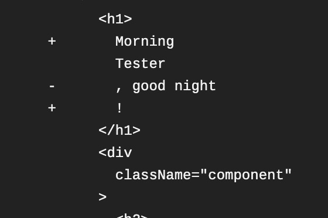

Last time I wrote about my first time using jest to test React components. It looked nice when I tested locally but Travis CI was not happy with my snapshot.
Commit the snapshots!
My first reaction was checking if I should commit the snapshot files at all, or should I let Travis CI generate its own.
Jest documentation gives a clear answer: yes.
Should snapshot files be committed?
Yes, all snapshot files should be committed alongside the modules they are covering and their tests. They should be considered part of a test, similar to the value of any other assertion in Jest. In fact, snapshots represent the state of the source modules at any given point in time. In this way, when the source modules are modified, Jest can tell what changed from the previous version. It can also provide a lot of additional context during code review in which reviewers can study your changes better.
Mock the date
Now if I look into the Travis CI logs:

So it’s greeting the Tester at different time of the day…
There must be a way to mock a stable date for the testing!
So I found a piece of code from here and added it before I render the user Dashboard:
1 | const DATE_TO_USE = new Date(2020, 11, 17, 23, 24, 0); |
Now I get a stable goodnight.
So what is jest.fn
Mock functions are also known as “spies”, because they let you spy on the behavior of a function that is called indirectly by some other code, rather than just testing the output. You can create a mock function with jest.fn().
Here’s the jest doc on mock-functions